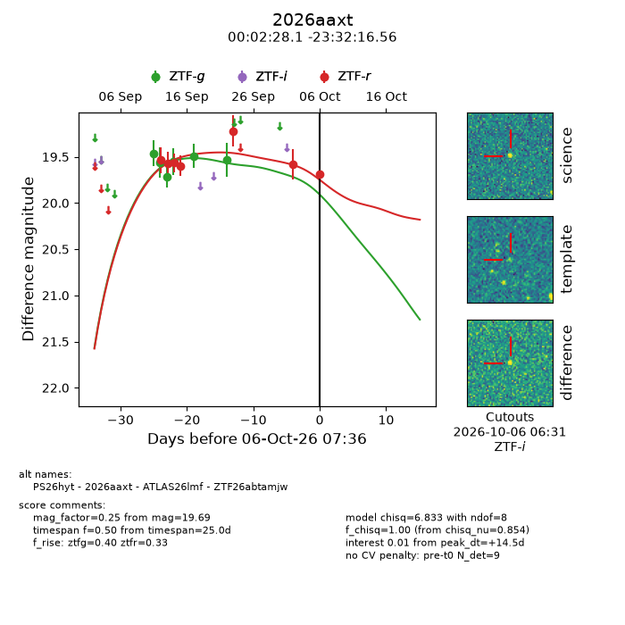
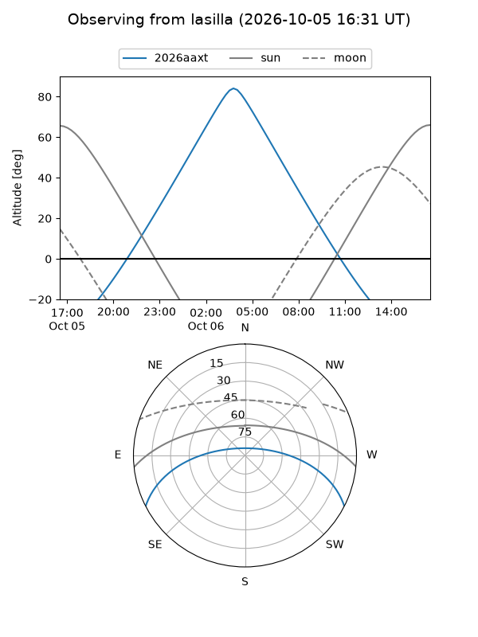
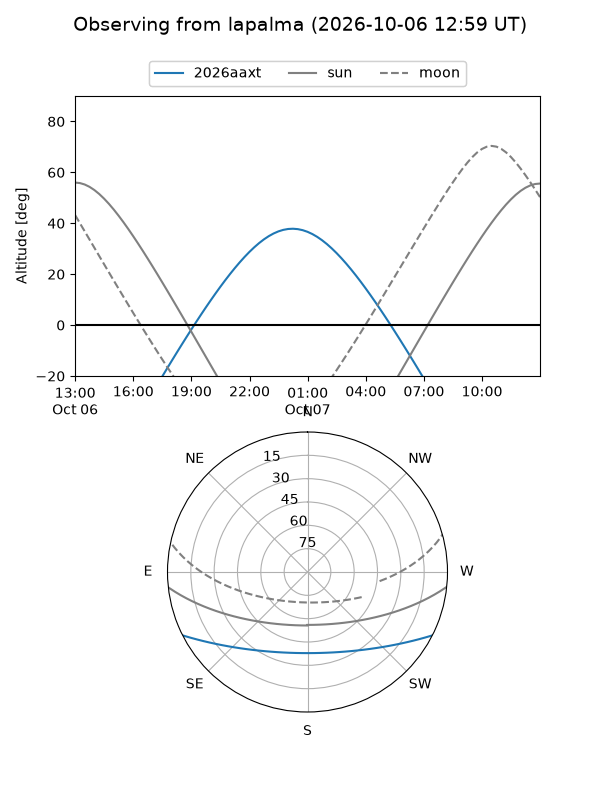
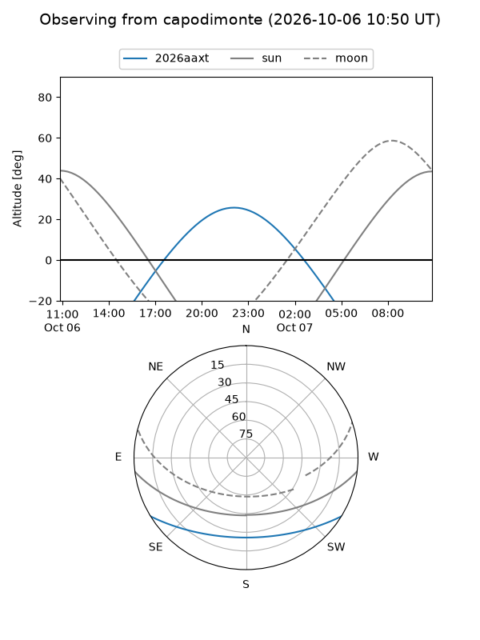
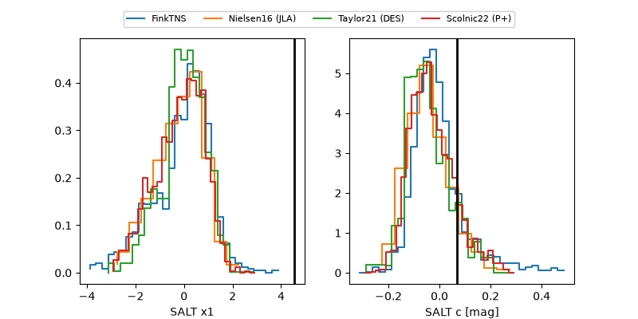

2026aaxt
Target 2026aaxt at 2026-10-06 07:38
Aliases and brokers:
FINK-ZTF: ztf.fink-portal.org/ZTF26abtamjw
Lasair-ZTF: lasair-ztf.lsst.ac.uk/objects/ZTF26abtamjw
ALeRCE-ZTF: alerce.online/object/ZTF26abtamjw
YSE-PZ: ziggy.ucolick.org/yse/transient_detail/2026aaxt
TNS name: wis-tns.org/object/2026aaxt
Direct TNS query: direct search
alt names
ZTF26abtamjw (ztf,fink_ztf)
2026aaxt (tns,yse)
ATLAS26lmf (atlas)
PS26hyt (panstarrs)
Coordinates:
equatorial (ra, dec) = 0.6169,-23.53793
equatorial (HMS+DMS) = 00:02:28.06,-23:32:16.56
galactic (l, b) = (48.2130,-78.37339)
Flags:
TNS type: nan
peak dt: +14.5
Photometry:
last ztfg=19.53, ztfr=19.69
6 ztfg, 7 ztfr detections
Lightcurve

Visibility



Additional plots
